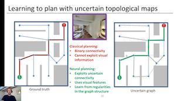
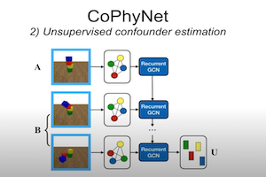
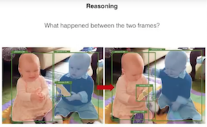
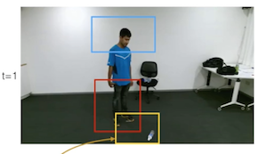
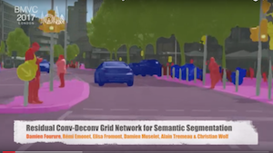
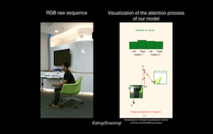
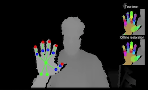
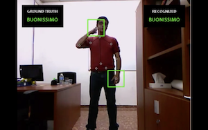

|  |
Edward Beeching,
Jilles Dibangoye,
Olivier Simonin and
Christian Wolf.
Learning to plan with uncertain topological maps.
To appear in European Conference on Computer Vision (ECCV), 2020. [Video/Youtube] [ArXiv (Similar Content)] |
|  |
Fabien Baradel,
Natalia Neverova,
Christian Wolf,
Julien Mille,
Greg Mori.
COPHY: Counterfactual Learning of Physical Dynamics.
In International Conference on Learning Representations (ICLR), 2020 [Video/Youtube] [ArXiv (Similar Content)] |
|  |
Fabien Baradel,
Natalia Neverova,
Christian Wolf,
Julien Mille,
Greg Mori.
Object Level Visual Reasoning in Videos.
To appear in European Conference on Computer Vision (ECCV) 2018. [Video/Youtube] [ArXiv (Similar Content)] |
|  |
Fabien Baradel,
Christian Wolf,
Julien Mille and
Graham W. Taylor.
Glimpse Clouds: Human Activity Recognition from Unstructured Feature Points.
In Computer Vision and Pattern Recognition (CVPR), 2018. [Video/Youtube] [ArXiv-Version]. |
|  |
Damien Fourure,
Remi Emonet,
Elisa Fromont,
Damien Muselet,
Natalia Neverova,
Alain Tremeau,
Christian Wolf.
Residual Conv-Deconv Grid Network for Semantic Segmentation. BMVC 2017. [Video/Youtube] [Arxiv:1707.07958]. |
|  |
Fabien Baradel, Christian Wolf, Julien Mille. Pose-conditioned Spatio-Temporal Attention for Human Action Recognition. 2017. . [Video/Youtube] [Arxiv:1703.10106]. |
|  |
Natalia Neverova, Christian Wolf, Florian Nebout, Graham W. Taylor. Hand Pose Estimation through Weakly-Supervised Learning of a Rich Intermediate Representation. Computer Vision and Image Understanding, 2017. [Video/Youtube] [ArXiv]. |
|  |
Natalia Neverova, Christian Wolf, Graham W. Taylor and Florian Nebout. ModDrop: adaptive multi-modal gesture recognition. IEEE Transactions on Pattern Analysis and Machine Intelligence (PAMI), 2016. [Video/Youtube] [PDF]. |